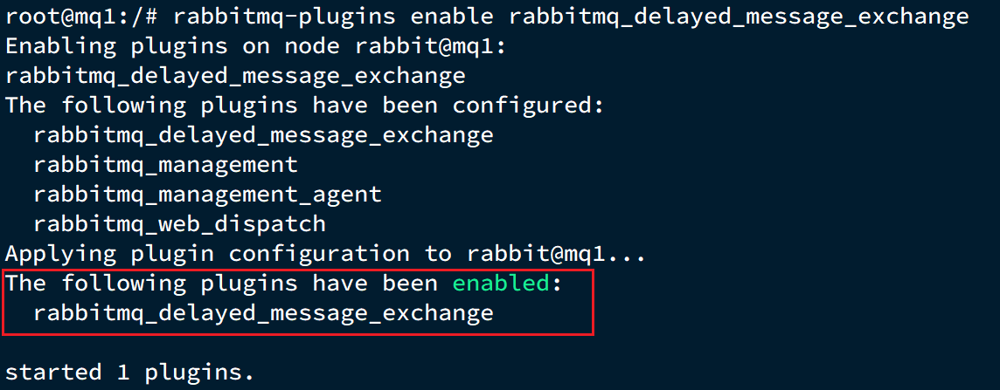
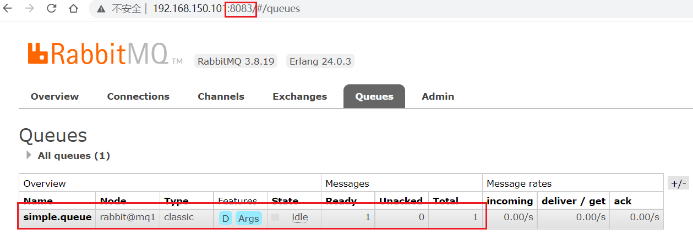
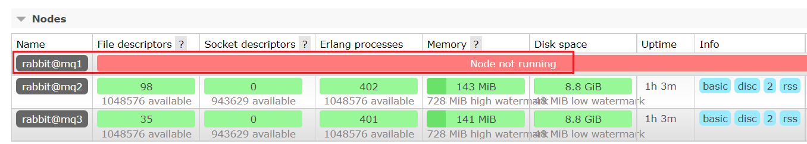

1.单机部署
我们在Centos7虚拟机中使用Docker来安装。
1.1.下载镜像
方式一：在线拉取
docker pull rabbitmq:3.8-management
方式二：从本地加载
在课前资料已经提供了镜像包：

上传到虚拟机中后，使用命令加载镜像即可：
docker load -i mq.tar
1.2.安装MQ
执行下面的命令来运行MQ容器：
docker run \
-e RABBITMQ_DEFAULT_USER=itcast \
-e RABBITMQ_DEFAULT_PASS=123321 \
-v mq-plugins:/plugins \
--name mq \
--hostname mq1 \
-p 15672:15672 \
-p 5672:5672 \
-d \
rabbitmq:3.8-management
2.安装DelayExchange插件
官方的安装指南地址为：https://blog.rabbitmq.com/posts/2015/04/scheduling-messages-with-rabbitmq
上述文档是基于linux原生安装RabbitMQ，然后安装插件。
因为我们之前是基于Docker安装RabbitMQ，所以下面我们会讲解基于Docker来安装RabbitMQ插件。
2.1.下载插件
RabbitMQ有一个官方的插件社区，地址为：https://www.rabbitmq.com/community-plugins.html
其中包含各种各样的插件，包括我们要使用的DelayExchange插件：

大家可以去对应的GitHub页面下载3.8.9版本的插件，地址为https://github.com/rabbitmq/rabbitmq-delayed-message-exchange/releases/tag/3.8.9这个对应RabbitMQ的3.8.5以上版本。
课前资料也提供了下载好的插件：

2.2.上传插件
因为我们是基于Docker安装，所以需要先查看RabbitMQ的插件目录对应的数据卷。如果不是基于Docker的同学，请参考第一章部分，重新创建Docker容器。
我们之前设定的RabbitMQ的数据卷名称为mq-plugins，所以我们使用下面命令查看数据卷：
docker volume inspect mq-plugins
可以得到下面结果：

接下来，将插件上传到这个目录即可：

2.3.安装插件
最后就是安装了，需要进入MQ容器内部来执行安装。我的容器名为mq，所以执行下面命令：
docker exec -it mq bash
执行时，请将其中的 -it 后面的mq替换为你自己的容器名.
进入容器内部后，执行下面命令开启插件：
rabbitmq-plugins enable rabbitmq_delayed_message_exchange
结果如下：

3.集群部署
接下来，我们看看如何安装RabbitMQ的集群。
2.1.集群分类
在RabbitMQ的官方文档中，讲述了两种集群的配置方式：
- 普通模式：普通模式集群不进行数据同步，每个MQ都有自己的队列、数据信息（其它元数据信息如交换机等会同步）。例如我们有2个MQ：mq1，和mq2，如果你的消息在mq1，而你连接到了mq2，那么mq2会去mq1拉取消息，然后返回给你。如果mq1宕机，消息就会丢失。
- 镜像模式：与普通模式不同，队列会在各个mq的镜像节点之间同步，因此你连接到任何一个镜像节点，均可获取到消息。而且如果一个节点宕机，并不会导致数据丢失。不过，这种方式增加了数据同步的带宽消耗。
我们先来看普通模式集群，我们的计划部署3节点的mq集群：
| 主机名 | 控制台端口 | amqp通信端口 |
|---|---|---|
| mq1 | 8081 —> 15672 | 8071 —> 5672 |
| mq2 | 8082 —> 15672 | 8072 —> 5672 |
| mq3 | 8083 —> 15672 | 8073 —> 5672 |
集群中的节点标示默认都是：rabbit@[hostname]，因此以上三个节点的名称分别为：
- rabbit@mq1
- rabbit@mq2
- rabbit@mq3
2.2.获取cookie
RabbitMQ底层依赖于Erlang，而Erlang虚拟机就是一个面向分布式的语言，默认就支持集群模式。集群模式中的每个RabbitMQ 节点使用 cookie 来确定它们是否被允许相互通信。
要使两个节点能够通信，它们必须具有相同的共享秘密，称为Erlang cookie。cookie 只是一串最多 255 个字符的字母数字字符。
每个集群节点必须具有相同的 cookie。实例之间也需要它来相互通信。
我们先在之前启动的mq容器中获取一个cookie值，作为集群的cookie。执行下面的命令：
docker exec -it mq cat /var/lib/rabbitmq/.erlang.cookie
可以看到cookie值如下：
FXZMCVGLBIXZCDEMMVZQ
接下来，停止并删除当前的mq容器，我们重新搭建集群。
docker rm -f mq

2.3.准备集群配置
在/tmp目录新建一个配置文件 rabbitmq.conf：
cd /tmp
# 创建文件
touch rabbitmq.conf
文件内容如下：
loopback_users.guest = false
listeners.tcp.default = 5672
cluster_formation.peer_discovery_backend = rabbit_peer_discovery_classic_config
cluster_formation.classic_config.nodes.1 = rabbit@mq1
cluster_formation.classic_config.nodes.2 = rabbit@mq2
cluster_formation.classic_config.nodes.3 = rabbit@mq3
再创建一个文件，记录cookie
cd /tmp
# 创建cookie文件
touch .erlang.cookie
# 写入cookie
echo "FXZMCVGLBIXZCDEMMVZQ" > .erlang.cookie
# 修改cookie文件的权限
chmod 600 .erlang.cookie
准备三个目录,mq1、mq2、mq3：
cd /tmp
# 创建目录
mkdir mq1 mq2 mq3
然后拷贝rabbitmq.conf、cookie文件到mq1、mq2、mq3：
# 进入/tmp
cd /tmp
# 拷贝
cp rabbitmq.conf mq1
cp rabbitmq.conf mq2
cp rabbitmq.conf mq3
cp .erlang.cookie mq1
cp .erlang.cookie mq2
cp .erlang.cookie mq3
2.4.启动集群
创建一个网络：
docker network create mq-net
docker volume create
运行命令
docker run -d --net mq-net \
-v ${PWD}/mq1/rabbitmq.conf:/etc/rabbitmq/rabbitmq.conf \
-v ${PWD}/.erlang.cookie:/var/lib/rabbitmq/.erlang.cookie \
-e RABBITMQ_DEFAULT_USER=itcast \
-e RABBITMQ_DEFAULT_PASS=123321 \
--name mq1 \
--hostname mq1 \
-p 8071:5672 \
-p 8081:15672 \
rabbitmq:3.8-management
docker run -d --net mq-net \
-v ${PWD}/mq2/rabbitmq.conf:/etc/rabbitmq/rabbitmq.conf \
-v ${PWD}/.erlang.cookie:/var/lib/rabbitmq/.erlang.cookie \
-e RABBITMQ_DEFAULT_USER=itcast \
-e RABBITMQ_DEFAULT_PASS=123321 \
--name mq2 \
--hostname mq2 \
-p 8072:5672 \
-p 8082:15672 \
rabbitmq:3.8-management
docker run -d --net mq-net \
-v ${PWD}/mq3/rabbitmq.conf:/etc/rabbitmq/rabbitmq.conf \
-v ${PWD}/.erlang.cookie:/var/lib/rabbitmq/.erlang.cookie \
-e RABBITMQ_DEFAULT_USER=itcast \
-e RABBITMQ_DEFAULT_PASS=123321 \
--name mq3 \
--hostname mq3 \
-p 8073:5672 \
-p 8083:15672 \
rabbitmq:3.8-management
2.5.测试
在mq1这个节点上添加一个队列：

如图，在mq2和mq3两个控制台也都能看到：

2.5.1.数据共享测试
点击这个队列，进入管理页面：

然后利用控制台发送一条消息到这个队列：

结果在mq2、mq3上都能看到这条消息：

2.5.2.可用性测试
我们让其中一台节点mq1宕机：
docker stop mq1
然后登录mq2或mq3的控制台，发现simple.queue也不可用了：

说明数据并没有拷贝到mq2和mq3。
4.镜像模式
在刚刚的案例中，一旦创建队列的主机宕机，队列就会不可用。不具备高可用能力。如果要解决这个问题，必须使用官方提供的镜像集群方案。
官方文档地址：https://www.rabbitmq.com/ha.html
4.1.镜像模式的特征
默认情况下，队列只保存在创建该队列的节点上。而镜像模式下，创建队列的节点被称为该队列的主节点，队列还会拷贝到集群中的其它节点，也叫做该队列的镜像节点。
但是，不同队列可以在集群中的任意节点上创建，因此不同队列的主节点可以不同。甚至，一个队列的主节点可能是另一个队列的镜像节点。
用户发送给队列的一切请求，例如发送消息、消息回执默认都会在主节点完成，如果是从节点接收到请求，也会路由到主节点去完成。镜像节点仅仅起到备份数据作用。
当主节点接收到消费者的ACK时，所有镜像都会删除节点中的数据。
总结如下：
- 镜像队列结构是一主多从（从就是镜像）
- 所有操作都是主节点完成，然后同步给镜像节点
- 主宕机后，镜像节点会替代成新的主（如果在主从同步完成前，主就已经宕机，可能出现数据丢失）
- 不具备负载均衡功能，因为所有操作都会有主节点完成（但是不同队列，其主节点可以不同，可以利用这个提高吞吐量）
4.2.镜像模式的配置
镜像模式的配置有3种模式：
| ha-mode | ha-params | 效果 |
|---|---|---|
| 准确模式exactly | 队列的副本量count | 集群中队列副本（主服务器和镜像服务器之和）的数量。count如果为1意味着单个副本：即队列主节点。count值为2表示2个副本：1个队列主和1个队列镜像。换句话说：count = 镜像数量 + 1。如果群集中的节点数少于count，则该队列将镜像到所有节点。如果有集群总数大于count+1，并且包含镜像的节点出现故障，则将在另一个节点上创建一个新的镜像。 |
| all | (none) | 队列在群集中的所有节点之间进行镜像。队列将镜像到任何新加入的节点。镜像到所有节点将对所有群集节点施加额外的压力，包括网络I / O，磁盘I / O和磁盘空间使用情况。推荐使用exactly，设置副本数为（N / 2 +1）。 |
| nodes | node names | 指定队列创建到哪些节点，如果指定的节点全部不存在，则会出现异常。如果指定的节点在集群中存在，但是暂时不可用，会创建节点到当前客户端连接到的节点。 |
这里我们以rabbitmqctl命令作为案例来讲解配置语法。
语法示例：
4.2.1.exactly模式
rabbitmqctl set_policy ha-two "^two\." '{"ha-mode":"exactly","ha-params":2,"ha-sync-mode":"automatic"}'
rabbitmqctl set_policy：固定写法ha-two：策略名称，自定义"^two\."：匹配队列的正则表达式，符合命名规则的队列才生效，这里是任何以two.开头的队列名称'{"ha-mode":"exactly","ha-params":2,"ha-sync-mode":"automatic"}': 策略内容"ha-mode":"exactly"：策略模式，此处是exactly模式，指定副本数量"ha-params":2：策略参数，这里是2，就是副本数量为2，1主1镜像"ha-sync-mode":"automatic"：同步策略，默认是manual，即新加入的镜像节点不会同步旧的消息。如果设置为automatic，则新加入的镜像节点会把主节点中所有消息都同步，会带来额外的网络开销
4.2.2.all模式
rabbitmqctl set_policy ha-all "^all\." '{"ha-mode":"all"}'
ha-all：策略名称，自定义"^all\."：匹配所有以all.开头的队列名'{"ha-mode":"all"}'：策略内容"ha-mode":"all"：策略模式，此处是all模式，即所有节点都会称为镜像节点
4.2.3.nodes模式
rabbitmqctl set_policy ha-nodes "^nodes\." '{"ha-mode":"nodes","ha-params":["rabbit@nodeA", "rabbit@nodeB"]}'
rabbitmqctl set_policy：固定写法ha-nodes：策略名称，自定义"^nodes\."：匹配队列的正则表达式，符合命名规则的队列才生效，这里是任何以nodes.开头的队列名称'{"ha-mode":"nodes","ha-params":["rabbit@nodeA", "rabbit@nodeB"]}': 策略内容"ha-mode":"nodes"：策略模式，此处是nodes模式"ha-params":["rabbit@mq1", "rabbit@mq2"]：策略参数，这里指定副本所在节点名称
4.3.测试
我们使用exactly模式的镜像，因为集群节点数量为3，因此镜像数量就设置为2.
运行下面的命令：
docker exec -it mq1 rabbitmqctl set_policy ha-two "^two\." '{"ha-mode":"exactly","ha-params":2,"ha-sync-mode":"automatic"}'
下面，我们创建一个新的队列：

在任意一个mq控制台查看队列：

4.3.1.测试数据共享
给two.queue发送一条消息：

然后在mq1、mq2、mq3的任意控制台查看消息：

4.3.2.测试高可用
现在，我们让two.queue的主节点mq1宕机：
docker stop mq1
查看集群状态：

查看队列状态：

发现依然是健康的！并且其主节点切换到了rabbit@mq2上
5.仲裁队列
从RabbitMQ 3.8版本开始，引入了新的仲裁队列，他具备与镜像队里类似的功能，但使用更加方便。
5.1.添加仲裁队列
在任意控制台添加一个队列，一定要选择队列类型为Quorum类型。

在任意控制台查看队列：

可以看到，仲裁队列的 + 2字样。代表这个队列有2个镜像节点。
因为仲裁队列默认的镜像数为5。如果你的集群有7个节点，那么镜像数肯定是5；而我们集群只有3个节点，因此镜像数量就是3.
5.2.测试
可以参考对镜像集群的测试，效果是一样的。
5.3.集群扩容
5.3.1.加入集群
1）启动一个新的MQ容器：
docker run -d --net mq-net \
-v ${PWD}/.erlang.cookie:/var/lib/rabbitmq/.erlang.cookie \
-e RABBITMQ_DEFAULT_USER=itcast \
-e RABBITMQ_DEFAULT_PASS=123321 \
--name mq4 \
--hostname mq5 \
-p 8074:15672 \
-p 8084:15672 \
rabbitmq:3.8-management
2）进入容器控制台：
docker exec -it mq4 bash
3）停止mq进程
rabbitmqctl stop_app
4）重置RabbitMQ中的数据：
rabbitmqctl reset
5）加入mq1：
rabbitmqctl join_cluster rabbit@mq1
6）再次启动mq进程
rabbitmqctl start_app

5.3.2.增加仲裁队列副本
我们先查看下quorum.queue这个队列目前的副本情况，进入mq1容器：
docker exec -it mq1 bash
执行命令：
rabbitmq-queues quorum_status "quorum.queue"
结果：

现在，我们让mq4也加入进来：
rabbitmq-queues add_member "quorum.queue" "rabbit@mq4"
结果：

再次查看：
rabbitmq-queues quorum_status "quorum.queue"

查看控制台，发现quorum.queue的镜像数量也从原来的 +2 变成了 +3：

...